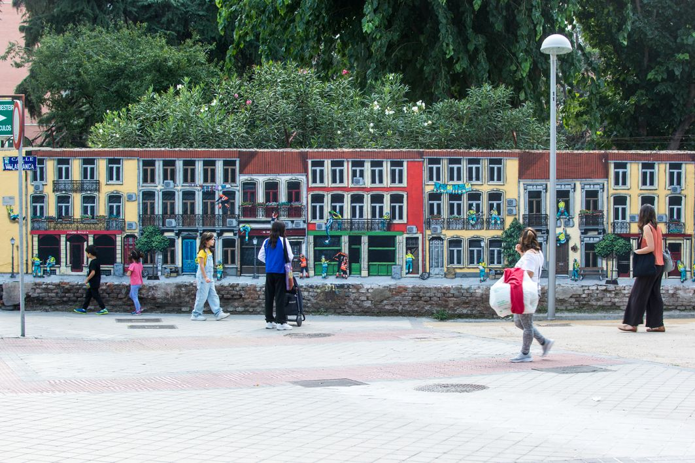
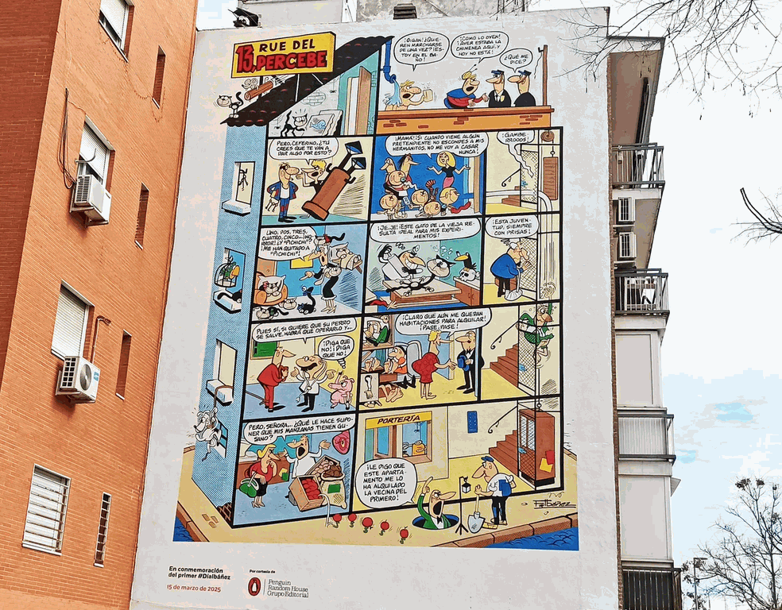
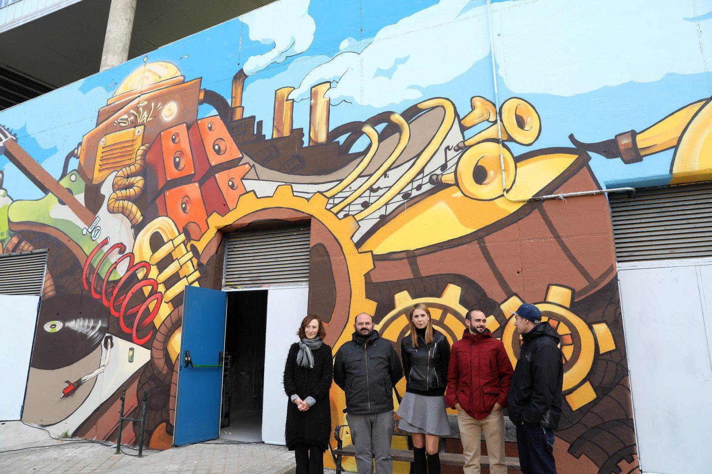
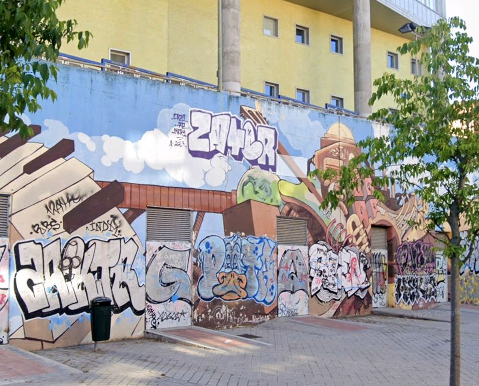

• Street Art.:
Facebook.com STREET ART UTOPIA
Street Art UTOPIA | We declare the world as our canvas
Street Art -humor
Street Art 30 Cool Street Art Around The World - Hongkiat
Cuando el arte callejero se encuentra con la naturaleza (colección de 35 fotos)


El Mural As Mouras obra del artista gallego Wedo Goás ha sido reconocido como mejor mural del mundo 2025 en la categoría Expert Spotlight por la plataforma internacional Street Art Cities.
Street Art Cities 2025 Street Art Cities ha puesto en marcha la votación para elegir los mejores murales del mundo de 2025, y España cuenta con 15 obras nominadas.
La Comunidad de Madrid concentra tres de las obras finalistas, firmadas por.:
Street Art Cities 2025 Los 50 mejores murales del mundo | Traveler
.jpg)
Sfhir "Fireman" (Alcalá de Henares) Mural bomberos Alcalá ubicada en la torre de prácticas

Leyvel "Sigue tu estrella" (Madrid/Moratalaz)
Leyvel "Sigue tu estrella" (Madrid/Moratalaz)
El mural urbano ‘Persigue tu estrella’ de Moratalaz entre los 10 mejores del mundo

Murfin "Niños perdidos I" (Fuenlabrada)

Murfin "Niños perdidos I" (Fuenlabrada) #3 Street Art Cities 2025
Street Art Cities 2025 Garcibuey, Salamanca nominada
Cuatro murales de Fio.silva, J.ulicru, margay_art, in.esuka
Street Art Cities 2024 Mejor mural del mundo Cristóbal Persona en Fene (A Coruña) titulada Charanguista Andino traveler.es
Street Art Cities 2024 Mejor mural del mundo Cristóbal Persona en Fene, titulada Charanguista Andino nosdiario.gal
Street Art Cities 2024 Los cuatro grafitis de España que compiten por ser el mejor del mundo
Street Art Cities 2024 Estos son los murales españoles que compiten por ser el mejor del mundo
Street Art Cities 2024 hay 15 obras realizadas en España, de los 97 artistas nominados en las tres categorías, 17 son españoles
Sfhir en Fene ganador 2023
Galicia es coronada la reina del arte urbano con tres de los mejores murales del mundo 2023
Sfhir con su obra ubicada en Fene, Lula Goce con ‘A Dona do Esteiro’ en Nigrán y Yoe 33 con ‘Copora’ en Lugo -elcorreogallego.es
Street Art Cities 2023 streetartcities.com
Street Art Cities "Las rederas de Ondarroa" es el tercer mejor mural del mundo 2023
El mejor mural del mundo 2023 está en España. La obra del artista Sfhir ubicada en Fene (A Coruña) ha sido elegido por Street Art Cities en cuyo top 10 hay nada menos que ¡8 murales de España!
El mural de Sfhir en Fene se convierte en el mejor del mundo 2023
Street Art Cities los mejores murales del mundo de 2022
Fene | A Coruña vuelve a estar en el punto de mira del arte urbano mundial: Así es el mural que aspira a ser el mejor del año 2024
Dos artistas gallegos, Tirso Paz, conocido como Bublegum y Diego AS están nominados en el concurso al mejor mural del mundo en la plataforma Street Art Cities
Invierno Oriental | Chino Graff - Street Art Cities
Street Artist Creates Clever Urban Interventions To Get People Thinking | Bored Panda
Madrid Street Art Pj twitter @MSAP_Madrid
Paula twitter @Paula_graffiti
Pasaje de los Cubos: un lienzo en blanco para artistas urbanos en Madrid
Arte al Cubo | Madrid Street Art Project
cooltourspain.es Especialistas en talleres, tour de arte urbano en Madrid y visitas guiadas
Estudio34 Guia de Arte Urbano de Madrid + Mapa Interactivo
Street Art | El mapa del arte urbano de Madrid
Street Art | Tour Madrid | Lavapíes | Malasaña Cooltourspain's street
Street Art Lavapíes | CALLE 2025: de ruta artística por Lavapiés traveler.es
Street Art Lavapíes | CALLE 2025: de ruta artística por Lavapiés enlavapies.com
Street Art | Galicia
Almeida pide “desmitificar” a los grafiteros: “No son artistas, son vándalos”
Street Art | Okuda | Barrio Moscardó
Street Art | 95artgallery instagram.com
C/ Álvarez Abellán 23 (Carabanchel)
viernes de 16 a 20 y sábados de 11:30 a 14:30
Centro Arte Fuenlabrada ceartfuenlabrada.es
Street Art | Writers, Taggers, Graffers y Crews Identidades juveniles en torno al grafiteo
Street Art Cities instagram
Street Art Cities nominados a mejor grafiti del mundo que se pueden ver en España
Veinte pinturas de arte callejero por el mundo
Case Maclaim Urvanity Walls. Pasaje de la Caja de Ahorros / Puerta del Sol
Urvanity Walls Cuatro nuevos murales
Street Art | Arte urbano en Madrid
22 obras de arte urbano de Madrid que te sorprenderán
Cam declara BIC las obras de creadores como Muelle, Suso 33, Sfhir o Zeta
El grafiti de un canario se corona como el mejor del mundo Matías Mata y su mural Las entrañas de la memoria ganan el primer premio en la categoría Impacto Social
Pichação | Pixação arte visual urbana ilegal brasileña
La València de los murales: ¿museo al aire libre o escaparate para inversores?
Artistas.:
Dulk Instagram
Dulk Fuenlabrada
Dulk mural Settled Fuenlabrada
Sabek es un joven artista URBANO de Madrid que viene del GRAFITI y tiene un estilo y color personal con gran belleza y arte.
Odeith Sérgio ‘Odeith’, nacido en 1976 en Damaia, Portugal
Odeith ¡Maestro de la ilusión!: 19 grafitis en 3D
Bordalo II
Okuda y Bordalo mural en 3D Embajadores 33
Okuda Todas las obras de Okuda en Madrid
Okuda Instagram
Okuda twitter
Okuda Faro de Ajo
Okuda “Siente los Kolores” Movistar Estudiantes
Okuda edificio del Polígono Empresarial de VillaVerde, Avda. Real de Pinto 158
Okuda Local en Usera -visita Concejala Sonia Junta Distrito Usera
Okuda C. Cdad. de Frías 10 Palibexx Villaverde
Okuda el artista urbano que colorea el capitalismo: “Transformar la ciudad es lo que más me pone”

Sfhir El mural más grande de Madrid, en la fachada del Palacio Vistalegre (Carabanchel)
Ruta murales Carabanchel facebook.com
Sfhir El mural más grande de Madrid, en la fachada del Palacio Vistalegre (Carabanchel): más de 1.000 m2 y la firma del artista urbano de moda El muralista Sfhir considerado el mejor del mundo (2023) se encuentra trabajando en "el proyecto más importante de su carrera"
Sfhir Madrid estrena el mural más grande de España: mil metros cuadrados de arte urbano
Sfhir| Mural feito en Canido, Ferrol @sfhir
Sfhir Lc7 Ogt @sfhir
Suso33I
Suso33I Arte Urbano ceartfuenlabrada.es
B0rdalo II instagram.com
B0rdalo II 20 obras de arte hechas con basura
Animalitoland "Watermelon King" Un niño y su amigo imaginario, comiendo sandía en su propio mundo dentro del mercado y su ritmo agitado. Se encuentra dentro del mercado de alimentos, no es fácil de encontrar
C. Jesús del Gran Poder, 42 #Usera
Animalitoland - Street Art Cities -mapa
Taquen - Street Art Cities -mapa
Zësar Bahamonte | Los cultivadores -Street Art Cities
CEIP Regimiento Inmemorial del Rey Av. de Moratalaz, 51
Zësar Bahamonte -Street Art Cities

Mural "El Banksy Belga" de Jaune Escuela Julián Besteiro Av. de Bruselas 36
Mural "El Banksy Belga" de Jaune googlemaps
Bosque de colores vibrantes. Mural Abraham Lacalle (VETA by Fer Francés)
IES Emperatriz María de Austria Carabanchel
El arte urbano toma este barrio de Madrid con cinco nuevas obras de gran formato El proyecto 'Muraltalaz' cuenta con las intervenciones de conocidos artistas como Taquen | Dulk o la pareja de artistas Alegría del Prado
Alegría del Prado - Street Art Cities -mapa
Jan Is De Man Artista callejero holandés crea enormes murales tridimensionales que transforman edificios suburbanos, monumentos históricos y cualquier lugar de la ciudad que se preste a interactuar con su imaginación, en bibliotecas, cohetes, estanterías y mucho más.
Plasencia única ciudad de España, que sin ser capital de Provincia, tiene dos Catedrales Presenta un Impactante Mural Hiperrealista como Cartel de la Semana Santa 2025. Dimensiones 11 metros de altura por 6 metros de ancho Este mural hiperrealista ubicado en el hastial entre la Catedral Nueva y la Catedral Vieja Se trata de una obra maestra del reconocido muralista J.M. Brea quien, inspirado en la fuerza dramática de Caravaggio ha creado un impresionante Descendimiento
Plasencia presenta un Impactante Mural Hiperrealista de J.M. Brea
ubicado en el hastial entre la Catedral Nueva y la Catedral Vieja
Homenaje a Francisco Ibáñez en Carabanchel con un mural General Ricardos 46
Realizado por el artista NSN997 y kerudekolorz

Homenaje a Francisco Ibáñez en Carabanchel con un mural General Ricardos 46
Realizado por el artista NSN997 y kerudekolorz
13, Rue del Percebe está en Carabanchel Traveler
NSN997 - Street Art Cities -mapa
Mural Carabanchel de Lidia Cao y Mentalink calle Aguacate Carabanchel

Mural de Jofre Oliveras ubicada en el CEIP Capitán Cortés
C. de Monseñor Oscar Romero, 17 Carabanchel

Mural de Kike Art | Las tres custodias c/ Tomás Meabe 26
STREET ART FUENLABRADA.:
CEART FUENLABRADA | Centro de Arte Tomás y Valiente de Fuenlabrada c/ San Andrés esquina c/ de Leganés
Calle Leganés, 51. (RENFE Estación La Serna)
CEART FUENLABRADA -Facebook
De ruta por los murales de Fuenlabrada, capital del arte urbano traveler
Paseo de arte urbano por FUENLABRADA
MAUF Museo de Arte Urbano de Fuenlabrada
‘Mirar a través de las estaciones’
El mural consta de cuatro obras realizadas por cuatro artistas locales:
Criss ‘Sombra de otoño’, Nem ‘Primavera’, Mayl ‘Vuelo de verano’ y Makino ‘Invierno’. El resultado es un homenaje a la naturaleza.
Avenida Francisco Javier Sauquillo con la calle Constitución.
‘La Fogata’ del artista Surace CEART
Se trata de un homenaje a la creación colectiva y la comunión con la naturaleza.
El mural captura una escena de un momento mágico en el que la creatividad se convierte en un puente entre el mundo humano y el reino natural.
Calle Lourdes 2
Okuda San Miguel, Suso33, Felipe Pantone y Sixe Paredes, DULK, Eva Mena y Javier Lobo
Lula Goce forman parte ya del Museo de Arte Urbano de Fuenlabrada (MAUF) al aire libre
"Armonía Cósmica" | Sex, el Niño de las Pinturas Youtube
"Armonía Cósmica" | Sex, el Niño de las Pinturas lateral Espacio Joven La Plaza
"Refugio" dársena que sirve de acceso entre la estación y la Plaza de la Constitución
"Ama la diferencia" | Amaia Arrazola calle Móstoles
"Diversidad, aquí y ahora" | Amaia Arrazola calle Móstoles
"Jugadores Baloncesto" | Atómica Tatoo
"Sueña que puedes volar y te despertarás con alas" | Irene López León
"No pueden borrarnos" | Eva Mena & DEN XL Pasaje los Notarios/calle Hungría
"OPTICHROMIE FNLBRD" | Felipe Pantone Plaza de la Estación Calle de Hungría
SUSO 33 Plaza de la Estación Calle de Hungría
"Whereisokuda" | OKUDA SAN MIGUEL Plaza de la Estación Calle de Hungría
"ABSTRACCIÓN NUMÉRICA" | SIXE PAREDES Plaza de la Estación Calle de Hungría
"Settled" | DULK calle Luis Sauquillo
"Ahorra energía" | J.M. BREA | CEART calle San Andrés 2/Camino Leganés
Energía sostenible | Ardilla | Jesús Mateos Brea c/ San Andrés esquina c/ de Leganés youtube
Energía sostenible | Brea seleccionado entre los 100 graffitis mejores del mundo
"Cambios" by Morse
"Pasado" y "Recuerdos" | Javier Lobo fachadas de la entrada de la calle la Plaza, esquina Luis Sauquillo
"Near posterus" (Futuro cercano) (Abuelos) plaza José Fernández Ochoa
de los artistas fuenlabreños Aitor Moreno (Klandestino) y Carlos Aranda (Kafre)
100 mejores obras del mundo seleccionadas por la plataforma Street Art Cities,
10 son españolas, y, una de ellas.:
“Luz" "Niña y Flor" | Lula Goce calle Móstoles, 18
Una niña sujeta una luz entre sus manos. Alrededor de ella flotan pequeñas motas luminosas mientras la rodean coloridos corales.
Está en el fondo del mar.
Barco de plástico por Da2 C. Quito, 2 y C/ de Leganés, 58
El mural muestra a un niño jugando en la orilla del mar con una barca de plástico, una escena típica del verano que pretende concienciar sobre la necesidad del reciclaje del plástico y, al mismo tiempo, hacer un llamamiento a la ciudadanía para mantener limpios nuestros mares.
Discóbolo por Diego As Paseo del Dr. Severo Ochoa, 2
La imagen de Discóbolo sosteniendo un ramo de flores. Este gesto simboliza la paz y la sensibilidad que a veces se pueden asociar a una figura musculosa, mostrando un contraste entre la fuerza y la sensibilidad del hombre.
Sirena por Sfhir C/ de Leganés, 44
En la mitología griega, las sirenas eran criaturas híbridas que atraían a los marineros con sus cantos hipnóticos. Según la mitología, Orfeo luchó contra el canto de las sirenas con su lira, y las convirtió en piedra.
En este mural la sirena regresa con más fuerza tocando una lira de ladrillo tras haber vencido a Orfeo y adquirido sus habilidades.
Paseo de Arte Urbano por FUENLABRADA Google My Maps mio
STREET ART MORATALAZ.: 23 murales

Sigue tu estrella | Leyvel Street Art Cities
CEIP Regimiento Inmemorial del Rey acoge el original estilo de Leyvel. En su mural, esta artista visual madrileña fusiona la pintura tradicional con las técnicas más novedosas como la escultura digital, la animación y la realidad aumentada. Su pintura, presidida por un gran lince, alcanza una nueva dimensión si el visitante emplea el móvil, ya que se convierte en una obra inmersiva e interactiva.

"Wolves family" de Asem Navarro instalado en el muro del colegio Martínez Montañés

Sr. Val Un motor hecho a base de engranajes y de instrumentos musicales. Esta singular propuesta, con la que se ha querido representar la importancia de la cultura como motor de los barrios, es el tema del mural que embellece el muro exterior de los locales de ensayo de la biblioteca pública municipal Miguel Delibes en el distrito de Moratalaz. La actuación tiene un valor añadido: su creación es fruto de la colaboración entre los vecinos y vecinas del distrito y el artista urbano Sr. Val Se trata de la propuesta de arte urbano participativo a la que invita el programa ‘Compartiendo muros’, que el Área de Cultura y Deportes del Ayuntamiento está desarrollando junto con el grupo municipal del Partido Socialista en seis distritos de la ciudad. 27 Noviembre 2017

Vandalizado
Muraltalaz ruta de Muraltalaz en googlemaps (2024)
Muraltalaz Street Art Cities
Muraltalaz amplía su catálogo urbano con nuevos murales y una obra interactiva Street Art Cities
Junta Municipal de Moratalaz Street Art Cities

Mural de la artista Asem Navarro Centro Servicios Sociales Fuente Carrantona

Mural de Kaluf en el CEIP Menéndez Pidal
Arte Digital AI.:
Impresionismo y tecnología: la inteligencia artificial anima la obra “Pont Neuf, París”, de Renoir
Con ayuda de la IA, una obra de Van Gogh cobró vida
Vincent van Gogh Seascape near Les Saintes-Maries-de-la-Mer 1888
National Gallery of Art @ngadc
PixVerse herramienta que permite crear vídeos de manera rápida y sencilla utilizando inteligencia artificial
PixVerse Guía Completa de Pixverse AI para Crear Vídeos Asombrosos
(no incluye audio, versión free marca de agua)
PixVerse Tutorial | Cómo crear los Mejores Videos con IA -youtube
CapCut Editor de video todo en uno y herramienta de diseño gráfico basada en la IA
CapCut Editor online
Google lanzó Veo2 hace 2 semanas y sigue dejando al mundo boquiabierto.
Don Quijote & IA @IA_Quijote
Don Quijote & IA @IA_Quijote
>> Si conoces estos 10 sitios web IA podrías ir a prisión...
David IA (@David_eficaz)
DailyChronicals @DailyChronicals AI generated or AI created
Hunyuan 3D 2.0 MV - Modelo abierto para la generación de formas 3D de alta calidad @TencentHunyuan
Midjourney.com
Midjourney prompt examples : List of commands - Blue Shadow
Midjourney Art of Prompting
If Only @IfOnlyAI AI Artistic
<---------->
Ideogram.ai Crea imágenes con IA que contengan texto legible
Resumen: Ideogram convierte texto en imágenes llamativas de forma gratuita, con una capacidad especial para integrar texto legible en los visuales generados.
Paso a paso:
Regístrate en Ideogram para obtener una cuenta gratuita (recibirás generaciones diarias sin costo).
Haz clic en "What do you want to create?" en el panel de control y escribe un prompt detallado.
Ajusta configuraciones como la relación de aspecto y los "magic prompts", luego presiona "Generar" para obtener cuatro imágenes únicas.
Consejo profesional: Después de generar tus imágenes, usa "Remix" para ajustes sutiles, "Retry" para nuevas variaciones o "Upscale" para mayor resolución.
<---------->
Da vida a tus fotos antiguas con color (Gemini 2.0 Flash)
El resumen: En este tutorial, aprenderás a usar la nueva función nativa de generación de imágenes en Gemini 2.0 Flash para colorizar instantáneamente fotos en blanco y negro y hacer ediciones creativas con simples comandos de texto.
Paso a paso:
Visita Google AI Studio
y selecciona "Gemini 2.0 Flash (Generación de Imágenes) Experimental" en el menú desplegable de "Modelos".
Sube tu imagen en blanco y negro haciendo clic en el botón "+" en el campo del mensaje.
Escribe "Coloriza esta imagen" y haz clic en Ejecutar para transformar tu foto.
Haz ediciones creativas con comandos adicionales como "Añadir nieve en los árboles" o "Cambiar la iluminación a la hora dorada" y descarga tu imagen completamente nueva.
Consejo profesional: Debes ser muy específico con las preferencias de color en tus comandos para obtener resultados más personalizados.
Intenta "colorizar con tonos cálidos de verano" en lugar de solo "añadir color" para obtener mejores resultados.
<---------->
Google tiene un Laboratorio de IA GRATUITO -IntelArt - Innovación IA
1. Doble (Doppl).
Prueba ropa con IA en segundos.
App experimental, permite simular looks y estilos personales.
Beneficios: Ahorra tiempo probándote ropa, explora estilo y mejora compras
Ejemplo: ¿No sabes qué ponerte? Pruébate 10 outfits en 2 minutos con IA.